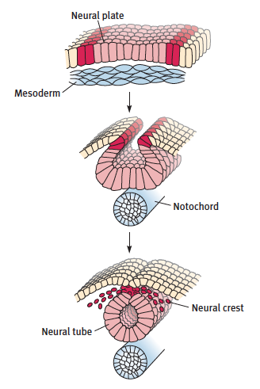
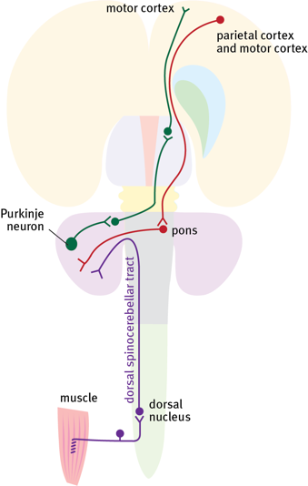
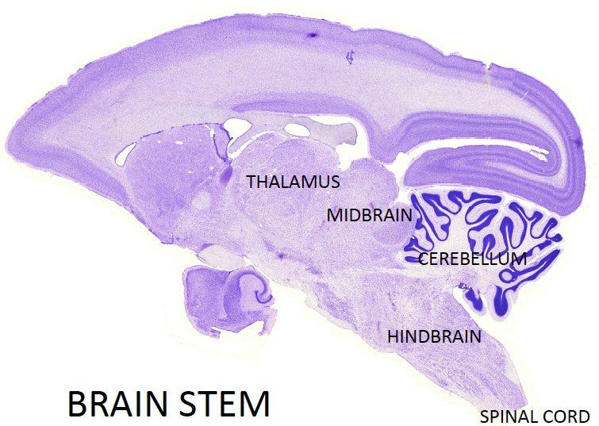
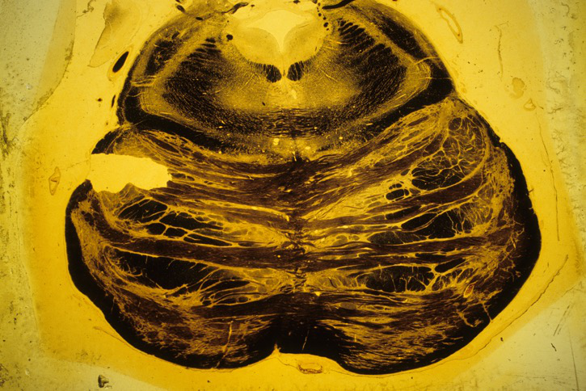
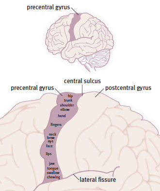
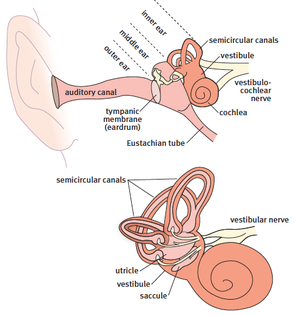
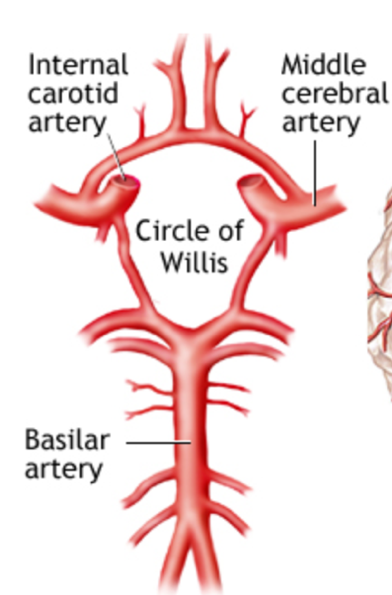
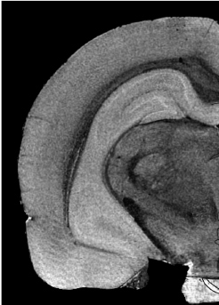

Based on "Neuroanatomy IBB 2022" by Charles Watson, Matthew Kirkcaldie, Friedrich Schwarz
Core principle: The CNS is organized hierarchically — spinal cord modules handle reflexes and pattern generators, the brainstem manages vital survival functions, and the forebrain executes sophisticated cognitive processes.
📌 Interactive Concept Map: An interactive D3.js concept map is available on the 🗺️ Concept Map page — explore the full hierarchy with zoom, pan, and collapsible nodes.
The central nervous system (CNS) consists of the brain and spinal cord. The spinal cord is relatively simple in structure, while the brain is highly elaborate. The brain can be divided into the brainstem, cerebellum, and forebrain.
Why the hierarchical arrangement matters: The CNS is organized hierarchically, with the simplest functions (standing, walking) located in the spinal cord and the most sophisticated functions (thinking, memory) in the forebrain. The brainstem handles survival functions like breathing, eating, vocalization, and balance. This arrangement means complex functions are "pre-packaged" in modular form in the brainstem and spinal cord, ready to respond to commands from higher centers.
The spinal cord is not merely a relay station. It contains action modules that can control whole movement patterns -- walking, standing, balance, reaching, and grasping. This is dramatically demonstrated in animals like horses that can stand and walk within minutes of birth because these functions are pre-programmed in the spinal cord.
The spinal cord can also execute rapid reflexes before the brain is even aware of the stimulus. The classic example: stepping on something sharp triggers flexion of the stimulated limb while simultaneously activating extensors in the opposite limb to maintain balance.
The spinal cord connects to internal organs and blood vessels through autonomic nerves. Sympathetic nerves connect to the thoracic cord, while parasympathetic nerves connect to the sacral cord.
The brainstem connects the spinal cord with the forebrain. It controls vital survival functions: breathing, chewing, swallowing, vocalization, facial expression, and eye muscle control. It also receives sensory information for taste, hearing, vision, facial skin sensation, and balance. The brainstem contains ascending and descending tracts (pathways) and centers that keep the forebrain awake and alert.
The brainstem divides into the hindbrain (connected to spinal cord) and midbrain (connected to forebrain). The dorsal hindbrain expands to form the cerebellum. The dorsal midbrain forms two pairs of bumps: the superior colliculi (visual centers) and inferior colliculi (auditory centers).
The forebrain has a central part (thalamus and hypothalamus) and two massive outgrowths called the cerebral hemispheres. The thalamus receives sensory pathways for touch, taste, hearing, vision, and balance, and relays this information to the cortex. The hypothalamus controls survival behaviors (eating, drinking, defense, reproduction) by modulating brainstem/spinal cord modules, the endocrine system, and the autonomic nervous system.
The cerebral hemisphere consists of the cerebral cortex (outer layer) and basal ganglia (deep neuron groups). The human cortex undergoes massive expansion, creating sulci and gyri. It can be understood under eight functional headings: senses, actions, thinking, memory, communication, emotions, sleep/alertness, and relationship. The basal ganglia (striatum + pallidum) are involved in inherited and learned motor functions; damage during late pregnancy can cause cerebral palsy. The amygdala plays a vital role in emotional responses (especially fear) and social group behavior.
The CNS is organized hierarchically from spinal cord to forebrain. Each level pre-packages specific functional modules. The spinal cord handles reflexes and basic movement patterns; the brainstem manages survival functions; the forebrain controls higher cognition, sensation, and voluntary movement.
About 14,000 genes (more than half of all human genes) control mammalian brain development. Genes first provide general wiring instructions, then organize the unique connection patterns that characterize each brain region.
The embryonic brain develops from a strip of ectodermal cells forming the neural plate. Under influence of secreted factors from the notochord, the neural plate edges curl medially to form the neural tube, which encloses the neural canal.
Dorsoventral patterning: Cells dorsal to the neural canal are directed by Wnt and BMP genes to form the two alar plates (sensory functions). Cells ventral to the central canal are directed by sonic hedgehog (Shh) expressed in the notochord to form the two basal plates (motor functions). The opposing influences of Shh (ventral) and BMP/Wnt (dorsal) create the dorsoventral axis of the neural tube.

As the neural tube closes, cells break away from the dorsal side to form the neural crest. These cells give rise to the peripheral nervous system (dorsal root ganglia, autonomic ganglia), melanocytes of the skin, and (surprisingly) the bones and muscles of the face.
⚠️ Common Misconception: The neural crest gives rise only to neurons. In fact, neural crest cells are multipotent and also form melanocytes (skin pigment cells) and the skeletal and muscular components of the face. This explains why certain developmental disorders affect both facial structure and nervous system function simultaneously.
The rostral end of the neural tube develops three swellings: the forebrain, midbrain, and hindbrain vesicles. The forebrain vesicle extends laterally to form the cerebral hemispheres. The midbrain roof (tectum) forms the superior and inferior colliculi. The rostral hindbrain roof forms the cerebellum.
The multiplication rate of neural cells is extraordinary: the few hundred cells in the primitive neural tube eventually generate over 80 billion nerve cells. During the first two years of life, up to 250,000 new cells are generated every minute.
The brain is made up of a series of distinct neuromeres (segments): five in the forebrain, two in the midbrain, and twelve in the hindbrain. Each segment has alar and basal components around the neural canal.
Key gene expression boundaries: The primary division between forebrain/midbrain and hindbrain is defined by Otx2 (expressed in forebrain and midbrain) versus Gbx2 (expressed in rostral hindbrain).

The five forebrain segments: terminal hypothalamus (hy2), peduncular hypothalamus (hy1), and three diencephalic prosomeres (p1, p2, p3). The terminal hypothalamus (hy2) is the rostral end of the neural tube; it gives rise to the telencephalic (cerebral) vesicles dorsally, the optic vesicles rostrally, and the posterior pituitary (neurohypophysis).
The telencephalic vesicle is layered: surface = pallium, beneath = subpallium (striatum, pallidum, diagonal domain, preoptic area).
The three diencephalic segments: p1 (pretectal area), p2 (thalamus), p3 (prethalamus). The pineal gland grows from p2.
The midbrain: a large rostral segment (m1, forming superior and inferior colliculi) and a smaller caudal segment (m2). The hindbrain: the isthmus and eleven rhombomeres (r1-r11). The cerebellum arises from the isthmus and r1. The pontine nuclei form on the ventral surface of r3 and r4. Rhombomeres r2-r11 are defined by Hox gene expression. Hox1-Hox4 are expressed in the hindbrain; Hox5-Hox13 are expressed in the spinal cord.
The neural tube does not stay straight. Differential growth creates the cephalic flexure in the midbrain region -- an almost 180-degree bend that pushes the hypothalamus ventral to the diencephalon. This has historically led to the mistaken belief that the hypothalamus is simply ventral to the thalamus. In developmental terms, the hypothalamus is actually rostral to the diencephalon.
⚠️ Common Misconception: The hypothalamus is NOT simply a ventral addition to the thalamus. Because of the cephalic flexure, what appears as "hypo-" (below) the thalamus in the adult brain is actually rostral to it in developmental origin. The hypothalamus arises from the most rostral part of the neural tube and is responsible for generating the entire telencephalon from its alar plate.
Although spinal nerves give the appearance of segmentation, the spinal cord of four-limbed vertebrates has six distinct functional regions based on Hox gene expression: prebrachial (C1-C4), brachial (C5-T1, limb motor neurons), postbrachial (T2-L1, sympathetic), crural (L2-S1, lower limb), postcrural (S2-S4, parasympathetic), and caudal (S5-Co2, tail).
The PNS consists of: (1) motor neuron axons connecting to muscles, (2) dorsal root ganglion cells and their sensory axons, and (3) autonomic ganglia and postganglionic axons.
Important: The optic and olfactory nerves are NOT part of the PNS -- they are direct outgrowths of the forebrain, with myelin produced by oligodendrocytes (not Schwann cells).
Some parts of the mature brain can generate new neurons: notably the hippocampus, cerebellum, and olfactory bulb. Elsewhere, neuroplasticity results from reorganization of synaptic networks rather than new neuron formation.
Most neurons stay where they are born and send axons elsewhere. However, in some regions, groups of neurons migrate substantial distances:
Developing neurons sprout processes that form synapses. Basic brainstem and spinal cord wiring is laid down early in fetal development (required for survival -- breathing, swallowing). These connections are strictly programmed -- no room for error. First human fetal movements occur around 12 weeks.
Later connections (late fetal through adulthood) are less rigidly programmed and depend on interaction with the environment. This period of plasticity includes a "sensitive period" (longer interval for shaping by experience) and the shorter "critical period" (during which fundamental organization is determined).
The brain forms an average of a million new connections per minute throughout life.
Growing axons find their correct targets through axon guidance (pathfinding). The growing tip is an enlarged growth cone that feels its way through tissue, detecting chemical signals.

Guidance molecules include netrins, semaphorins, and Slit proteins. Axon guidance works by stepwise refinement: (1) follow a general pathway, bundling with similar axons; (2) obey general cues (e.g., cross the midline); (3) detect specific chemical signals from the target.
The ephrin/Eph receptor system preserves topographic organization: axons with different numbers of Eph receptors stop at different positions along an ephrin gradient, maintaining spatial order across long distances.
Systems are over-connected initially, then refined by pruning -- millions of synapses and many neurons are eliminated during development. Neurons that have made poor connections are killed off. This pruning continues throughout life.
Developmental insults causing devastating damage:
The classic kitten experiment (one eye kept closed during a specific postnatal period prevented binocular vision development) led to the concept of critical periods. Modern view: critical/sensitive periods represent the ideal time for receiving particular inputs, but delayed inputs can still be effective. The term "sensitive periods" is preferred. Examples: language acquisition (9 months to 5 years), emotional control (birth to 2 years), motor control (birth to 8 years), habitual responding (6 months to 2 years).
From birth to adulthood, the cortex increases five-fold in mass without new cells -- almost entirely due to dendrite growth. There is marked synapse growth in frontal lobes during adolescence; frontal lobes are not fully mature until about 25 years.
Myelination occurs during childhood and adolescence into early adulthood, increasing action potential transmission speed. This stabilizes connection times as the body enlarges. Without myelination, a command to foot muscles would take thirty times longer in an adult vs. a baby.
The cerebellum is extremely small at birth but grows to the size of an orange in the first six years, matching the period of motor skill learning.
The mature brain can change itself by generating new neurons or making new connections. The brain can compensate after injury through major connection changes. Normal brains also grow in response to new information: final-year medical students showed increased grey matter in parietal cortex and hippocampus during exam preparation. Mike Merzenich promoted the idea that exercising the brain can defend against cognitive deterioration in elderly individuals.
Neural development is a precisely orchestrated process involving gene expression gradients (Shh, BMP/Wnt, Hox, Otx2/Gbx2) that pattern the neural tube into functional segments. Neurogenesis, migration, axon guidance, synapse formation, and pruning build a functional nervous system, with critical periods during which environmental input shapes final connectivity. Plasticity continues throughout life.
The spinal cord is the simplest part of the CNS, containing sensory neurons, motor neurons, long tracts, autonomic preganglionic nuclei, and pattern generators for complex movements.
The spinal cord extends from the base of the skull to the first lumbar vertebra in humans. It is noticeably thicker in limb-connecting regions (cervical and lumbar enlargements).
In transverse section, a central butterfly-shaped gray matter is surrounded by white matter. The gray matter is subdivided into laminae of Rexed:
| Laminae | Location | Function |
|---|---|---|
| 1-4 | Dorsal horn | Sensory input processing |
| 5 | Between dorsal and ventral horns | Pattern generators for limb movements |
| 6 | Variable, not at all levels | Small; function varies by level |
| 7-9 | Ventral horn | Motor functions; lamina 9 contains motor neurons |

Three funiculi (columns): dorsal, lateral, and ventral.
Somatic motor neurons in lamina 9 are large multipolar neurons, staining well with acetylcholinesterase and NeuN. They innervate skeletal muscle. Axial muscle motor neurons are present at all spinal levels; limb muscle motor neurons are only at C5-T1 (upper limb) and L3-S1 (lower limb).
Autonomic motor neurons: Sympathetic preganglionic at T2-L2; parasympathetic preganglionic at S2-S4.
Each spinal nerve connects to the cord via a dorsal root (sensory, with dorsal root ganglion) and a ventral root (motor).
Naming convention: Cervical nerves are named for the vertebra below their exit (C1 exits above C1). Thoracic and lower nerves are named for the vertebra above. The nerve between C7 and T1 is the C8 nerve (no C8 vertebra). Result: 7 cervical vertebrae, 8 cervical nerves. Below: 12 thoracic, 5 lumbar, 5 sacral, 1-2 coccygeal.
Plexuses: Brachial plexus (C5-T1) supplies forelimb muscles. Lumbosacral plexus (L2-S1) supplies hindlimb muscles.
Each spinal nerve supplies a specific strip of skin from the midline back to the ventral midline. This skin area is called a dermatome.
Descending tracts arise from the cerebral cortex and brainstem. Most cross in the brainstem and descend in the lateral or ventral funiculus.
| Tract | Origin | Funiculus | Function |
|---|---|---|---|
| Corticospinal | Motor cortex | Lateral | Fine voluntary movement, especially distal limbs |
| Rubrospinal | Red nucleus | Lateral | Flexor movements |
| Lateral reticulospinal | Reticular nuclei | Lateral | Flexor control |
| Vestibulospinal | Vestibular nuclei | Ventral | Extensor/postural control |
| Tectospinal | Superior colliculus | Ventral | Head orientation reflexes |
| Medial reticulospinal | Reticular nuclei | Ventral | Extensor/postural control |

Key functional distinction: Lateral funiculus tracts control flexor movements and distal limb muscles. Ventral funiculus tracts control extensor (postural) muscles of trunk and proximal limbs. The internal capsule is a common site of stroke damage -- a hemorrhage here causes paralysis and stiffness on the opposite side of the body.
Both spinothalamic and dorsal column pathways are three-neuron chains: (1) dorsal root ganglion cell, (2) second-order neuron that crosses the midline, (3) thalamic neuron projecting to cortex.
| System | Information Carried | Crossing Point | Target |
|---|---|---|---|
| Dorsal columns (gracile + cuneate fasciculi) | Touch, deep pressure, proprioception, vibration | Medulla (internal arcuate fibers) | Ventroposterior thalamus |
| Lateral spinothalamic | Pain and temperature | Anterior white commissure (spinal cord) | Ventroposterior thalamus |
| Ventral spinothalamic | Touch | Anterior white commissure (spinal cord) | Ventroposterior thalamus |
Why the difference in crossing matters clinically: A tumor pressing on one side of the spinal cord will affect pain and temperature on the opposite side (crossed at spinal level) and touch/proprioception on the same side (not crossed until medulla). This pattern (dissociated sensory loss) is a key diagnostic sign.
Convey proprioception and tactile information to the cerebellum, ending on the same side they began. The dorsal spinocerebellar tract originates from the nucleus of Clarke (thoracic/upper lumbar levels) and ends ipsilaterally. The ventral spinocerebellar tract is more complicated anatomically but also ends ipsilaterally. Both serve the body's rear half; the front half uses the external cuneate system.

The spinal cord integrates sensory input, motor output, and autonomic control through a laminar organization. Descending tracts regulate movement from above; ascending tracts carry sensory information to the brain. The pattern of crossing determines the clinical effects of spinal cord lesions.
The brain stem consists of the midbrain (mesencephalon) and hindbrain (rhombencephalon). The midbrain is continuous with the forebrain; the hindbrain is continuous with the spinal cord.
⚠️ Common Misconception: Older textbooks divide the brainstem into midbrain, pons, and medulla oblongata. This is misleading because the pontine expansion in humans appears to extend from midbrain to half the hindbrain length. In reality, the pons is just a ventral expansion at specific hindbrain levels (rhombomeres 3-4) rather than a separate longitudinal division. Use "midbrain" and "hindbrain" as the primary subdivisions.
The brainstem connects to the head through ten pairs of cranial nerves (CN 3-12). Dorsal outgrowths: superior colliculi (visual) and inferior colliculi (auditory) in the midbrain; the cerebellum from the rostral hindbrain.
As we ascend through the hindbrain, three major tract relocations occur:

Three large nuclei project to the cerebellum:
Key features: Fourth ventricle is widest caudally and narrows rostrally toward the aqueduct. The medial lemniscus is forced into a horizontal position above the pontine expansion. The pyramid fibers are now called longitudinal fibers of the pons (corticospinal + corticopontine). At the rostral end, the superior cerebellar peduncle decussates -- fibers leaving the cerebellum heading to the thalamus. This decussation occurs in the isthmus, the most rostral hindbrain segment.
Caudal midbrain: Overlaps the isthmus. Features include the aqueduct, periaqueductal gray, the decussation of the superior cerebellar peduncle (actually in isthmus), and the cerebral peduncle (crus cerebri) -- the large fiber bundle containing corticospinal and corticopontine fibers.
Superior colliculus level: Laminated superior colliculi above the periaqueductal gray. The red nucleus (origin of rubrospinal tract) is obscured by superior cerebellar peduncle fibers. The substantia nigra lies on the inner margin of the cerebral peduncle. In fresh specimens, it is stained black by iron deposits. Dopaminergic cells of the substantia nigra project to forebrain motor centers. The oculomotor nerve fibers course through the red nucleus to emerge between the cerebral peduncles (interpeduncular fossa).

CN 1 (olfactory) and CN 2 (optic) are connected to the forebrain, not the brainstem.
| Nerve | Exit Point | Key Functions | Clinical Notes |
|---|---|---|---|
| CN 3 (Oculomotor) | Interpeduncular fossa (midbrain) | All eye muscles except superior oblique and lateral rectus; Edinger-Westphal nucleus controls pupil constriction and ciliary muscle | Damage: divergent squint, ptosis (drooping eyelid), dilated pupil |
| CN 4 (Trochlear) | Dorsal isthmus, crosses in superior medullary velum | Superior oblique muscle of eye | Smallest cranial nerve; only nerve to exit dorsally |
| CN 5 (Trigeminal) | Basilar pons | Sensory: face skin; Motor: muscles of mastication. Large sensory root + smaller motor root | Three sensory nuclei: principal, spinal (descending), mesencephalic |
| CN 6 (Abducens) | Caudal border of pons | Lateral rectus muscle of eye | Nucleus near midline, close to MLF |
| CN 7 (Facial) | Lateral trapezoid body | Muscles of face; taste from anterior 2/3 of tongue; parasympathetic to submandibular gland | Motor fibers loop around abducens nucleus (internal genu) |
| CN 8 (Vestibulocochlear) | Junction of pons and medulla | Hearing (cochlear) and balance (vestibular) | Two bundles straddle inferior cerebellar peduncle |
| CN 9 (Glossopharyngeal) | Lateral caudal hindbrain | Taste from posterior 1/3 of tongue; parasympathetic to parotid gland; palatoglossus muscle | Nucleus ambiguus and inferior salivatory nucleus |
| CN 10 (Vagus) | Lateral caudal hindbrain | Parasympathetic to thoracic/abdominal viscera; taste; general visceral afferent | Dorsal motor nucleus; nucleus of solitary tract; nucleus ambiguus |
| CN 11 (Accessory) | Lateral caudal hindbrain + spinal root | Cranial part: joins vagus to pharynx; Spinal part: sternomastoid and trapezius | Spinal root arises from C2-C4 |
| CN 12 (Hypoglossal) | Lateral border of pyramid | Tongue muscles | Nucleus medial to dorsal motor nucleus of vagus |
Efferent (motor): somatic efferent (skeletal muscle), visceral efferent (autonomic), branchial efferent (pharyngeal arch muscles).
Afferent (sensory): somatic sensory (general sensation), visceral sensory (organ sensation), special sensory (taste).
The brainstem integrates cranial nerve functions, survival reflexes, and serves as a conduit for all pathways between forebrain and spinal cord. Understanding its cross-sectional anatomy at key levels (pyramidal decussation, sensory decussation, inferior olive, pontine nuclei, midbrain colliculi) is essential for localizing lesions.
The cerebellum is an outgrowth of the rostral hindbrain (isthmus and r1). It is tiny at birth but grows rapidly postnatally, reaching the size of an orange in humans by about age 6.
The cerebellum has a central white matter arranged like tree branches covered with grey matter. The midline portion is the vermis, divided into ten lobules in all mammals. The largest fissure is the primary fissure, separating anterior vermis (lobules 1-5) from posterior vermis (lobules 6-10). The nodule is lobule 10. The human cerebellar hemisphere is elaborately folded with hundreds of individual folia.

Deep cerebellar nuclei: The largest is the dentate nucleus (lateral). Three deep nuclei on each side are embedded in the deep cerebellar white matter.
Unlike the cerebral cortex (which connects to the opposite side of the body), each side of the cerebellum connects to the same side of the body. Unilateral cerebellar damage causes incoordination and tremor on the same side as the damage.
The cerebellum coordinates complex movements by comparing motor commands with actual body movements in real-time. It adjusts motor control to improve accuracy, especially at the end stages of purposeful movements. It also manages posture and balance by integrating vestibular input.
In primates, the cerebellum is vital for coordinating hand and eye movements. The human cerebellum has evolved for precise coordination of skilled finger movements under binocular vision -- a capacity that enabled tool manufacture.
The cerebellar cortex has three layers, uniform throughout the cerebellum:

The proportional relationship between cerebral cortex and cerebellum cell numbers is consistent across mammals: about 1:4 (cortical : cerebellar cells).
The main way the cerebellum tracks limb movement is from skin sensations (stretching, contact, folding), not primarily from joint or muscle stretch receptors as previously thought.
The cerebellum coordinates movement through a three-layer cortex with uniform histology. Input arrives via mossy fibers (mostly) and climbing fibers (from the inferior olive for timing). Purkinje cells provide the sole output to the deep cerebellar nuclei. The cerebellum connects ipsilaterally to the body and communicates with the contralateral motor cortex through the thalamus.
The diencephalon ("interbrain") sits between the midbrain and the hypothalamus. Its central part is the thalamus. Other parts: prethalamus (rostral) and pretectal area (caudal). Each corresponds to a diencephalic prosomere: p1 = pretectal, p2 = thalamus, p3 = prethalamus.
The thalamus receives input from all sensory systems except olfaction. Key nuclei:
| Nucleus | Abbreviation | Input | Projects To |
|---|---|---|---|
| Ventroposterior | VP | Somatosensory (medial lemniscus, spinothalamic) | Primary somatosensory cortex (S1) |
| Dorsal lateral geniculate | DLG | Visual (optic tract) | Primary visual cortex (V1) |
| Medial geniculate | MG | Auditory (from inferior colliculus) | Primary auditory cortex (A1) |
| Ventrolateral | VL | Cerebellum and globus pallidus | Primary motor cortex (M1) |
The habenular nuclei sit on the dorsomedial edge of the thalamus, with the pineal gland stalk attached. The pineal secretes melatonin, influencing the sleep cycle.
Prosomere 3 contains the zona incerta -- important for motor control. In Parkinson's disease, deep brain stimulation (DBS) electrodes inserted into the zona incerta can minimize tremors and muscle stiffness. The reticular nuclei of p3 control thalamic output to the cortex during sleep, setting up rhythmic wave patterns.
Prosomere 1 contains nuclei for visual reflexes. The posterior commissure (belongs to p1, not the midbrain as previously thought) links pretectal nuclei involved in eye reflexes.
Key Insight: The thalamus is NOT dorsal to the hypothalamus in developmental terms. Because of the cephalic flexure, the hypothalamus is actually rostral to the diencephalon. The adult appearance of the hypothalamus sitting "below" the thalamus is a consequence of the almost 180-degree bend in the neuraxis during development.
The diencephalon comprises thalamus (sensory relay), prethalamus (motor control via zona incerta), and pretectal area (visual reflexes). The thalamus is the essential gateway for sensory information to the cortex, with dedicated nuclei for each modality.
⚠️ Common Misconception: The name "hypothalamus" derives from the outdated belief that it is simply a ventral addition to the thalamus. In reality, the hypothalamus is formed from the most rostral part of the neural tube and is responsible for generating the entire telencephalon from its alar plate. It is the most crucial center in the developing human brain.
The hypothalamus comprises the terminal hypothalamic prosomere (hy2) and the peduncular hypothalamic prosomere (hy1). In mid-sagittal section, key landmarks: optic chiasm (rostral), mammillary bodies (caudal), pituitary stalk (between them).
The suprachiasmatic nucleus sits above the optic chiasm and serves as the brain's 24-hour clock, adjustable by light intensity information from the optic nerves. In complete darkness, it reverts to a 25-hour cycle.

Behavioral control is organized hierarchically. The hypothalamus controls behaviors essential for survival of the individual (eating, drinking, defense) and the species (reproduction, offspring care).
Two main control groups:
The hypothalamus conducts the "endocrine orchestra," with the pituitary as the lead player.
Direct (posterior pituitary): Large neurosecretory cells in the paraventricular and supraoptic nuclei send axons directly to the posterior pituitary, releasing oxytocin (uterine contraction, milk secretion, pair-bonding) and vasopressin/ADH (blood pressure increase, urine concentration).
Indirect (anterior pituitary): Cells in the paraventricular nucleus release tiny amounts of releasing hormones into a specialized portal blood system (hypothalamic capillaries to portal veins to anterior pituitary capillaries). Releasing hormones stimulate release of: growth hormone (GH), thyroid-stimulating hormone (TSH), adrenocorticotrophic hormone (ACTH), follicle-stimulating hormone (FSH), prolactin (PRL), and luteinizing hormone (LH).
The hypothalamus is the master controller of survival behaviors and endocrine function. It directly releases oxytocin and ADH into the bloodstream via the posterior pituitary and controls anterior pituitary hormone secretion through a portal blood system and releasing hormones.
The two telencephalic outgrowths arise from the alar plate of the rostral hypothalamic segment. Each hemisphere consists of an outer pallium (cortex) and subpallium (striatum, pallidum, other deep groups).

The human neocortex is massively expanded, forming gyri (raised areas) and sulci (grooves). It has six well-defined layers:
Why the layer differences matter: Primary sensory areas have dense granule cell layers (layers 2 and 4) -- called granular cortex. Primary motor cortex lacks layer 4 -- called agranular cortex. This distinction allows you to identify cortical areas histologically.

Lobes named for overlying cranial bones: frontal, parietal, temporal, occipital.
The neocortex has no olfactory sensory area -- all olfactory information projects to ventral cortical areas (olfactory bulb, olfactory tubercle, piriform cortex).
In 1910, Korbinian Brodmann published a numbered list of about 50 areas based on histological differences. This numbering is still widely used. Modern studies estimate about 180 distinct areas in the human neocortex.

| Area | Name | Location |
|---|---|---|
| 4 | Primary motor cortex (M1) | Precentral gyrus |
| 3, 1, 2 | Primary somatosensory cortex (S1) | Postcentral gyrus |
| 17 | Primary visual cortex (V1) | Medial occipital lobe, banks of calcarine sulcus |
| 41 | Primary auditory cortex (A1) | Upper surface of superior temporal gyrus inside lateral fissure |
| 9, 10 | Prefrontal cortex | Rostral to premotor cortex in frontal lobe |
| 44, 45 | Broca's area (motor speech) | Inferior frontal gyrus (dominant hemisphere) |
| 39, 40 | Wernicke's area (speech comprehension) | Superior temporal gyrus, inside lateral fissure (dominant hemisphere) |
Derived from the medial pallium. Responsible for short-term memory registration. Components: dentate gyrus, CA3 region, CA1 region, subiculum, and entorhinal cortex.
The entorhinal cortex (in the parahippocampal gyrus) acts like a GPS with a precise two-dimensional grid map of surroundings, linking event memories to places. Information flows: entorhinal cortex → dentate gyrus → CA3 → CA1 → subiculum (output center). The subiculum projects to the septum and hypothalamus via the fornix.
Striatum and pallidum: The largest subpallial groups (collectively "basal ganglia," though the term is problematic). The striatum = caudate nucleus + putamen + accumbens nucleus. Medial to the putamen is the globus pallidus (the main part of the pallidum). Together they form a powerful motor control system, enabling the brain to choose from a "library" of inherited stereotyped behaviors.
The striatum receives input from the motor cortex and projects to the globus pallidus, which projects to the ventrolateral thalamus, which projects back to the motor cortex. The dopaminergic nigrostriatal pathway from the substantia nigra to the striatum is crucial -- damage causes Parkinson's disease.
The accumbens nucleus receives a dopaminergic projection from the ventral tegmental area, forming the basis of the brain's internal reward system.
Amygdala: A complex structure with medial group (olfactory connections) and lateral group (emotional responses, especially fear). Responds to danger signals, activating "fight or flight" mechanisms via the hypothalamus. Also controls hierarchical behavior (social pecking order) in vertebrates. Unconscious fear memories generated through the amygdala are very difficult to suppress.
Avoid the term "Limbic System": The term "limbic system" is used inconsistently across textbooks, with different authors adding or subtracting structures randomly. Some include the hypothalamus and brainstem parts. The confusion is so great that it is best to avoid the term altogether. Broca originally used "le grand lobe limbique" to describe a curved belt of structures bordering the central forebrain, but modern usage has rendered the term meaningless.
Three types of axons in the cerebral white matter:
The telencephalon comprises the pallium (cortex) and subpallium (basal ganglia, amygdala). The six-layered neocortex is organized into functionally specialized areas defined by Brodmann's cytoarchitectonic map. The basal ganglia (striatum/pallidum) regulate movement through thalamocortical loops. The hippocampus manages memory, and the amygdala processes emotional responses and social behavior.
The primary motor area (M1, Brodmann area 4) is located in the precentral gyrus of the frontal lobe. Electrical stimulation produces contraction of muscles on the opposite side of the body. Body parts are represented upside down: head at the bottom, lower limb at the top (including extension onto the medial surface of the hemisphere). This is called somatotopic organization.

Corticospinal tract: Arises from large pyramidal cells in the motor cortex (layer 5). Axons travel through the internal capsule → cerebral peduncle → basilar pons → medullary pyramid. At the caudal medulla, most fibers cross in the pyramidal decussation and descend in the lateral funiculus to synapse on interneurons and motor neurons of the opposite side. In primates, some corticospinal fibers make direct (monosynaptic) contact with motor neurons in lamina 9 -- this allows fine finger control.
⚠️ Common Misconception: The term "pyramidal tract" is problematic. It refers to the medullary pyramids (where corticospinal fibers form visible bundles). Coincidentally, the cells of origin are pyramid-shaped neurons. Worse, the discredited "pyramidal/extrapyramidal" concept (debunked by Nauta and Mehler in 1962) still appears in some textbooks. There is no separate multisynaptic "extrapyramidal" pathway from cortex to spinal cord -- the globus pallidus projects to the thalamus, not to brainstem motor centers.
Humans with damage to the motor cortex or corticospinal tract cannot perform precise finger movements (writing, sewing, tying knots, picking up small objects). Less precise movements are less affected. An internal capsule stroke (common site of hemorrhage) causes paralysis and stiffness on the opposite side, accompanied by hypertonia and hyperreflexia from associated striatal damage.
The brain uses modular control systems in the brainstem and spinal cord to manage the dozens of muscles needed for specific tasks. These modules are pre-wired during development to produce semi-automatic movements like walking and chewing.
Example -- the withdrawal reflex: Standing on a sharp object triggers a complex response handled entirely by spinal cord interneurons: (1) flexors contract and extensors are inhibited in the affected limb, (2) extensors in the opposite limb contract to maintain stability -- all before the brain registers pain.
| Level | Module Examples | Controlled By |
|---|---|---|
| Hypothalamus | Eating, drinking, defense, reproduction | Survival behavior organizers in medial hypothalamus and mammillary body |
| Brainstem | Head orienting, licking, chewing, facial expression, vocalization, breathing | Midbrain and hindbrain motor centers |
| Spinal cord | Posture, locomotion, reaching, grasping, withdrawal reflexes | Pattern generators in lamina 5, motor neurons in lamina 9 |
The motor cortex also sends corticopontine fibers (to basilar pons → cerebellum) and corticobulbar fibers (to brainstem motor centers). Brainstem centers give rise to:
The circuit: motor cortex (glutamate, excitatory) → striatum (GABA, inhibitory) → pallidum (GABA, inhibitory) → thalamus (GABA, inhibitory) → motor cortex. The substantia nigra is connected to the striatum via the dopaminergic nigrostriatal pathway.
Damage to this system produces:
All motor control systems act through alpha motor neurons in the ventral horn (spinal cord) or brainstem motor nuclei. Charles Sherrington coined the term "final common pathway". Each alpha motor neuron connects to many muscle fibers (a motor unit). When it fires, all connected fibers contract. Activating alpha motor neurons is the only way to cause skeletal muscle contraction.
Motor control is hierarchical (cortex → brainstem/spinal cord modules) and uses the corticospinal tract for fine voluntary movement. The basal ganglia regulate movement through a cortical loop, and damage produces characteristic disorders (Parkinson's, Huntington's, cerebral palsy). All output converges on alpha motor neurons -- the final common pathway.
Somatic sensations (touch, pressure, pain, temperature) from the head travel via the trigeminal nerve to the brainstem. Sensations below the head travel via spinal nerves to the spinal cord.

First-order trigeminal neurons are in the trigeminal ganglion. Fibers enter the hindbrain at the basilar pons. Touch fibers synapse in the principal sensory nucleus and rostral spinal trigeminal nucleus. Pain/temperature fibers synapse in the caudal spinal trigeminal nucleus. All second-order axons cross and ascend to the medial VP thalamus, which projects to the inferior half of the postcentral gyrus.
Located in the postcentral gyrus (Brodmann areas 3, 1, 2). Topically organized: head at the bottom, lower limb at the top (sensory homunculus).

The eye: Light passes through cornea → aqueous humor → lens → vitreous humor → retina. The retina has distinct layers: photoreceptor layer (deepest), bipolar layer, ganglion cell layer (superficial). Human retina: ~7 million cone cells + ~700 million rod cells.
The retina performs significant processing: edge ganglion cells receive input from hundreds of rod cells (sensitivity); macula ganglion cells receive input from 2-3 cones (resolution).
Retinal projection: Medial (nasal) retinal axons cross at the optic chiasm. Lateral (temporal) retinal axons stay uncrossed. Because the lens inverts the image, the temporal visual field falls on the nasal retina (crossing fibers) and vice versa. Result: the left visual field of both eyes projects to the right visual cortex; the right visual field projects to the left visual cortex.
Ganglion cell axons project to: suprachiasmatic nucleus (circadian rhythm), lateral geniculate nucleus (vision), and superior colliculus (visual reflexes).
The ear: External ear (pinna, auditory canal, tympanic membrane) → middle ear (malleus, incus, stapes ossicles) → inner ear (cochlea). The middle ear connects to the throat via the Eustachian tube.
The cochlea contains three fluid-filled tubes: scala vestibuli, scala media (houses the organ of Corti), and scala tympani. Hair cells in the organ of Corti detect sound vibrations.

Auditory pathway: Organ of Corti hair cells → spiral ganglion cells → cochlear nuclei (hindbrain) → superior olivary complex (both sides, enabling sound localization) → inferior colliculus (midbrain) → medial geniculate nucleus (thalamus) → primary auditory cortex (A1, area 41, superior temporal gyrus).
The pathway is tonotopically organized throughout -- the frequency map from the cochlea (base = high frequencies, apex = low frequencies) is preserved at every level.
Main functions: Maintain balance, coordinate eye movements with head/body position. These are reflex-level functions, with constant postural and eye movement adjustments.
| System | Components | Function |
|---|---|---|
| Dynamic (semicircular canals) | Three canals (horizontal, sagittal, coronal), each with an ampulla containing hair cells in a cupula | Detect head movement in any direction via endolymph flow |
| Static (saccule and utricle) | Maculae with hair cells embedded in otolith membrane (contains calcium carbonate crystals/otoliths) | Register head position when stationary; detect linear acceleration and gravity |
The saccule macula is vertical (detects flexion/extension). The utricle macula is horizontal (detects lateral tilting). Together they establish head position at all times.

Vestibular nuclei in the hindbrain occupy a large area in the floor of the fourth ventricle. They connect strongly with the cerebellum, spinal cord, and eye movement control systems. The medial longitudinal fasciculus (MLF) links eye muscle nuclei and vestibular nuclei.
Vestibulospinal tracts: Lateral (uncrossed, all spinal levels, posture via extensor activation from saccule/utricle input) and medial (crossed, cervical cord, head position from semicircular canal input).
Nystagmus: After spinning and stopping abruptly, eyes flick side to side because the endolymph in the horizontal canal is still moving. The subject also reports vertigo (sensation that the room is spinning). This is distinct from dizziness (feeling of unsteadiness).
Cortical representation: The parietal-insular vestibular cortex (between ventral S1 and the insula) receives vestibular, visual, and neck position sense information for conscious body position perception.
Olfactory receptor neurons in the roof of the nasal cavity send unmyelinated axons through the ethmoid bone to the olfactory bulb. These receptors are replaced every ~40 days from stem cells in rodents.
The olfactory nerve bundles (12-20) travel through the ethmoid bone to reach the olfactory bulb. Because the olfactory system is an extension of the forebrain (not a peripheral nerve), it is surrounded by meninges and CSF. Fractures of the cribriform plate can cause CSF leakage and meningitis.
Olfactory bulb → olfactory tract → lateral olfactory tract → primary olfactory cortex (piriform cortex) in the uncus (rostral tip of the parahippocampal gyrus), entorhinal cortex, and amygdala.

Accessory olfactory system: Present in most mammals (not humans) for pheromone detection via the vomeronasal organ.
Clinical note: The uncus receives its blood supply through a vessel that can be compressed during difficult birth, potentially causing temporal lobe epilepsy (uncinate epilepsy).
Rostral migratory stream: Stem cells from the subventricular zone migrate into the olfactory bulb, providing new neurons throughout life. The rostral migratory stream and hippocampus are the only places where postnatal neurogenesis occurs. This stream is small in humans and decreases with age.
Taste receptors in the anterior 2/3 of the tongue → facial nerve (CN 7). Posterior 1/3 → glossopharyngeal nerve (CN 9). Taste fibers form the solitary tract in the hindbrain, surrounded by the nucleus of the solitary tract.
The nucleus of the solitary tract projects to the medial VP thalamus → insular cortex and frontal operculum.
Why taste is linked to smell: The tongue has only five basic tastes (salt, sweet, sour, bitter, umami). Most "flavor" is actually olfactory -- odors from food in the mouth reach olfactory receptors via the nasopharynx. When the nose is blocked by infection, food seems to lose ~90% of its taste.
Sensory systems follow a hierarchical, three-neuron chain from receptor to cortex. Each system maintains topographic organization (somatotopic, retinotopic, tonotopic). The dorsal column pathway crosses in the medulla; the spinothalamic pathway crosses in the spinal cord -- this difference is clinically critical for lesion localization. The vestibular system operates largely at a reflex level for balance and eye-head coordination.
The ANS controls internal organs, glands, and blood vessels automatically (involuntarily). Divisions: sympathetic (fight or flight), parasympathetic (rest and digest), and enteric (gut nervous system).
Unlike the somatic motor system (single neuron from CNS to muscle), the ANS uses a two-neuron chain: preganglionic neuron (in CNS) → ganglionic neuron (in peripheral ganglion) → target organ. This enables a single preganglionic neuron to trigger hundreds of ganglionic neurons, producing widespread effects (e.g., arterial constriction).
Sympathetic ganglia are close to the spinal cord (short preganglionic, long postganglionic axons). Parasympathetic ganglia are near or within target organs (long preganglionic, short postganglionic axons).
Location: Preganglionic neurons at T2-L2 only. Distribution is achieved via the sympathetic chain -- a long nerve system running alongside the vertebrae, with ~20 ganglia on each side. Postganglionic fibers reach head, trunk, and limbs.
Functions (fight or flight): Raise blood pressure, relax airways, mobilize energy, shut down digestion, increase blood flow to muscles (by reducing skin and intestinal flow).
Adrenal medulla: Releases adrenaline and noradrenaline into the bloodstream, amplifying and prolonging sympathetic effects and reaching cells not directly innervated.
Location: Brainstem and sacral spinal cord (S2-S4). Cranial distribution: CN 3 (pupil/ciliary muscle), CN 7 (secretory glands), CN 9 (parotid gland), CN 10/vagus (neck, thorax, abdomen to the pelvis). Sacral: sigmoid colon, rectum, bladder, genitalia.
Functions (rest and digest): Lower heart rate and blood pressure, stimulate salivation and digestion, penile erection, bladder emptying. Does NOT send nerves to the limbs.

Networks of neurons in the gut wall: 200-600 million neurons (more than the entire spinal cord). Controls contractions and secretions of the digestive system. Can act independently through its own reflex systems, though influenced by the central ANS. Uses ~20 transmitters (acetylcholine, VIP, nitric oxide, GABA, serotonin).
Clinical note -- Hirschsprung's disease: Congenital absence of parasympathetic innervation to the sigmoid colon, preventing defecation. Treatment: removal of the denervated section. The remaining colon learns to defecate after ~1 year.
ANS motor neurons are regulated by brainstem centers (cardiovascular, respiratory, salivation, swallowing, peristalsis, defecation, urination) and, above that, by the hypothalamus, which triggers these centers as part of broader behavioral responses (e.g., anger → increased heart rate, blood pressure, respiratory rate).
The ANS uses a two-neuron chain (preganglionic + ganglionic) to control organs and vessels. The sympathetic system (T2-L2) mediates fight-or-flight via the sympathetic chain. The parasympathetic system (brainstem + sacral) controls rest-and-digest functions, primarily through the vagus nerve. The enteric nervous system independently manages digestion.
The brain receives blood from two internal carotid arteries (front) and two vertebral arteries (back).
| Artery | Origin | Territory |
|---|---|---|
| Middle cerebral | Internal carotid (main branch) | Most of the lateral cerebral cortex (including motor, sensory, and speech areas) |
| Anterior cerebral | Internal carotid (smaller branch) | Medial side of front half of cortex + strip around anterior/superior margin of lateral cortex |
| Posterior cerebral | Basilar artery (from vertebrals) | Most of the occipital lobe including visual cortex |
| Basilar artery | Fusion of two vertebral arteries | Brainstem (gives off branches and divides into posterior cerebrals) |

Circle of Willis: The internal carotid and basilar systems are linked by small communicating arteries to form an arterial circle at the base of the brain. Components: posterior cerebral arteries (basilar branches), middle cerebral arteries, anterior cerebral arteries (carotid branches), posterior communicating arteries, anterior communicating artery.
The three main cerebral arteries send deep perforating branches to deep structures (e.g., internal capsule) before reaching the cortex. This is why internal capsule strokes are common -- the small perforating arteries are prone to hemorrhage or occlusion.
Cerebral veins empty into dural venous sinuses embedded in the dura mater, which drain into the internal jugular vein. The most prominent sinuses:
Arachnoid granulations: Evaginations of the arachnoid mater through which CSF is absorbed into the venous sinuses.
The brain is supplied by the carotid (anterior) and vertebral/basilar (posterior) systems, connected at the Circle of Willis. The middle cerebral artery supplies most of the lateral cortex including speech and motor areas. Venous drainage occurs through dural venous sinuses into the internal jugular veins.
The brain and spinal cord are surrounded by three layers: dura mater (thick, next to bone), arachnoid mater (thin, deep to dura), and pia mater (thin, on brain/spinal cord surface). The subarachnoid space (between arachnoid and pia) is filled with cerebrospinal fluid (CSF), which acts as a shock absorber.
CSF is produced by the choroid plexus inside the ventricles:

Hydrocephalus: If CSF circulation is blocked, CSF accumulates in the ventricles, causing expansion and compression of the cerebral cortex. This condition can be life-threatening and requires surgical intervention.
The blood-brain barrier prevents harmful molecules (bacteria, viruses, toxins) from reaching brain tissue. It is created by membrane specializations in the endothelial cells of brain capillaries. Water-soluble molecules cannot pass. Small lipid-soluble molecules can -- which is why lipid-soluble drugs are developed to reach the brain.
The blood-brain barrier is absent in the circumventricular organs -- small specialized areas in the walls of the third and fourth ventricles. Neurons here can monitor levels of certain chemicals in the bloodstream.
CSF is produced by the choroid plexus in the ventricles, circulates through the ventricular system to the subarachnoid space, and is reabsorbed into the venous system via arachnoid granulations. The blood-brain barrier protects the brain but is absent in circumventricular organs that monitor blood chemistry.
| Method | What It Shows | Key Use |
|---|---|---|
| Nissl stain | Cell bodies and nuclei of neurons and glia (thionin, cresyl violet) | Reveals nucleoli and rough endoplasmic reticulum; shows neuronal density and packing patterns |
| Myelin stains (Weigert, Luxol fast blue) | Myelinated axons | Shows tracts and pathways; large tracts stain darkly, cellular areas remain pale |
| Golgi stain | Complete neuron morphology (cell body, dendrites, axon) | Stains ~1% of neurons in isolation, revealing full neuronal structure. Revolutionized neuroanatomy (Ramon y Cajal) |
| Acetylcholinesterase (AChE) | Regions of cholinergic activity | Motor neurons are rich in AChE; reveals detailed layering (e.g., hippocampus) |
| Timm-Danscher (zinc stain) | Zinc-containing regions | Zinc is involved in DNA regulation, synaptic plasticity, and cellular signaling |
| Immunohistochemistry | Specific proteins using antibodies | Calcium-binding proteins (calbindin, calretinin, parvalbumin) mark specific cell groups; GFAP identifies astrocytes; NeuN identifies neurons (not glia) |

Before ~1970: silver stains for degenerating axons (Nauta method). Modern methods use axonal transport mechanisms:
Gene targeting in mice (Capecchi, Evans, Smithies -- Nobel Prize) enables knock-out (disable a gene) or knock-in (insert a new gene) to study effects on development and adulthood. The SMI-32 antibody demonstrates specific neurofilament proteins. NeuN antibody labels nearly all neurons but not glial cells (though Purkinje cells are NeuN-negative).
MRI excites specific atoms (usually hydrogen in water molecules) and images them systematically, creating detailed 3D maps. Resolution depends on magnetic field strength:

Brain structure is studied using Nissl stains (cell bodies), myelin stains (tracts), Golgi stains (individual neuron morphology), immunohistochemistry (specific proteins), and molecular genetic techniques (gene knock-out/knock-in). Connection tracing uses anterograde and retrograde axonal transport. Modern MRI can resolve brain structures at microscopic resolution.
Comprehensive Summary: The neuroanatomy of the CNS is organized hierarchically, with the spinal cord handling basic reflexes and movement patterns, the brainstem managing survival functions and cranial nerve integration, the cerebellum coordinating movement timing, the diencephalon relaying sensory information, the hypothalamus controlling endocrine and survival behaviors, and the telencephalon providing higher cognition, memory, and voluntary control. Each level can be understood through its developmental origin (neuromeres and gene expression patterns), its internal organization (laminae, nuclei, layers), its connections (ascending and descending pathways), and the clinical consequences of damage at each level. The sensory and motor systems follow parallel organizational principles with topographic maps maintained from periphery to cortex. The autonomic system uses a two-neuron chain to regulate internal organs, and the brain's blood supply and CSF circulation maintain its metabolic environment.